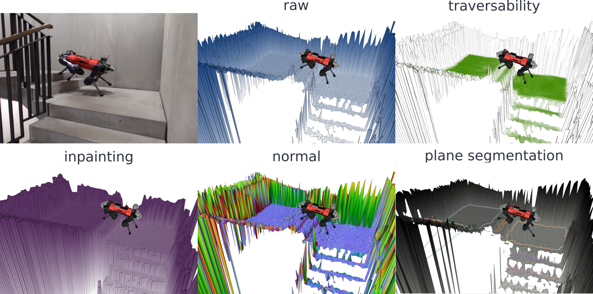

Multi-modal elevation mapping’s documentation¶
Welcome to elevation mapping documentation
Index¶
Introduction - What is elevation mapping cupy
Installation - How to install the elevation map
Tutorial - How to launch the first elevation map
This is a ROS package for elevation mapping on GPU. The elevation mapping code is written in python and uses cupy for GPU computation. The plane segmentation is done independently and runs on CPU. When the plane segmentation is generated, local convex approximations of the terrain can be efficiently generated.
Citing¶
Hint
Takahiro Miki, Lorenz Wellhausen, Ruben Grandia, Fabian Jenelten, Timon Homberger, Marco Hutter
Elevation Mapping for Locomotion and Navigation using GPU Link
@misc{https://doi.org/10.48550/arxiv.2204.12876,
doi = {10.48550/ARXIV.2204.12876},
url = {https://arxiv.org/abs/2204.12876},
author = {Miki, Takahiro and Wellhausen, Lorenz and Grandia, Ruben and Jenelten, Fabian and Homberger, Timon and Hutter, Marco},
keywords = {Robotics (cs.RO), FOS: Computer and information sciences, FOS: Computer and information sciences},
title = {Elevation Mapping for Locomotion and Navigation using GPU},
publisher = {arXiv},
year = {2022},
copyright = {arXiv.org perpetual, non-exclusive license}
}